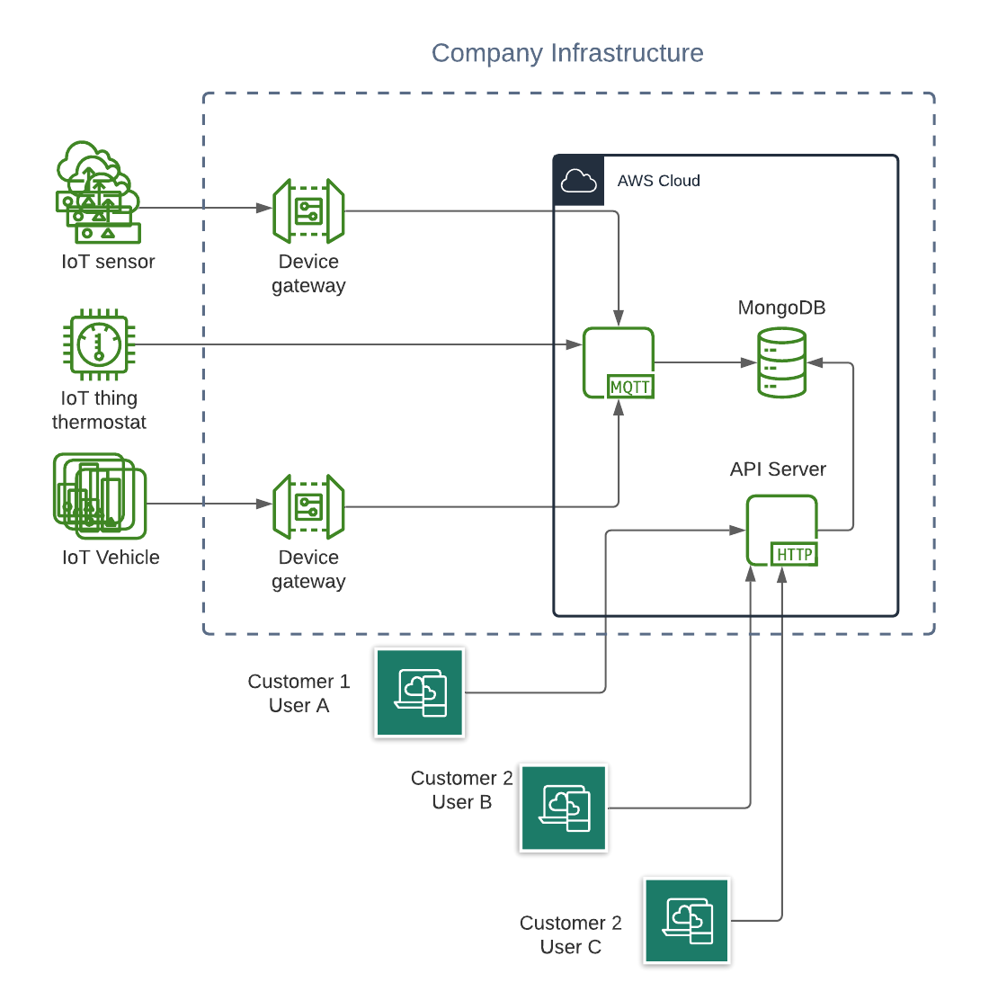
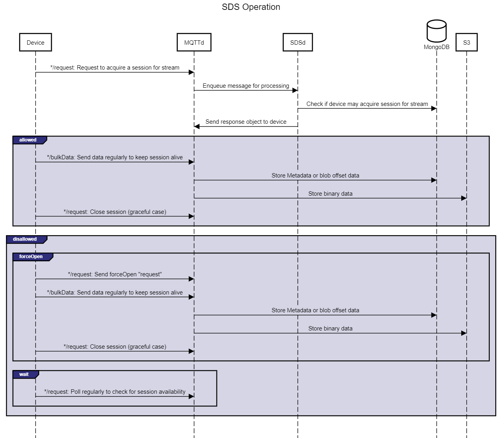

## Streaming Data Service (SDS) <span style="color: #a9a9a9;"> A distributed streaming service written between </span> October 1, 2019 <span style="color: #a9a9a9;"> and </span> June 1, 2020 <span style="color: #a9a9a9;"> by </span> John Rinehart <a href="https://www.github.com/johnrichardrinehart"><img data-src="./assets/GitHub-Mark-Light-32px.png" style="margin-bottom:0;"></a> Takeshi Shinoda-san <a href="https://www.github.com/takeshinoda"><img data-src="./assets/GitHub-Mark-Light-32px.png" style="margin-bottom:0;"></a> Yuta Shimakawa-san <a href="https://www.github.com/bananaumai"><img data-src="./assets/GitHub-Mark-Light-32px.png" style="margin-bottom:0;"></a> <span style="color: #a9a9a9;"> for </span> [MODE (Tinkermode, Inc.)](https://tinkermode.jp)
## MODE Value-Add 1. Cloud Support Engineers (in Japan) 1. Simple Auth/IAM 1. Simple pricing model (affordable AYCE level) 1. One-off manual data export * 1. High-availability, high-throughput (SLA) * 1. Custom data pipelines ("Smart Modules") *
## High-Level Infrastructure 
## Customer Requirements * binary data storage * support for aperiodic network disconnects * device- or application-scoped stream-like data structures * queryable/taggable storage and retrieval interface
## Design Process <!-- 1. System infrastructure proposal comprising: a. BoM (in-house and off-the-shelf) b. failure analysis c. SLA specification (throughput and availability) d. Documentation e. **not** IaC (yet) 1. Data model and storage format 1. Service code development 1. IaC development 1. CI/CD pipeline configuration (`dev`/`staging`/`prod`) 1. E2E tests and smoke tests 1. Iterate based on customer feedback --> 
## System Infrastructure 
## MQTT Topic Structure ### To SDS ``` /devices/${deviceId}/smartModules/${smartModuleName}/bulkData ```  ``` /devices/${deviceId}/smartModules/${smartModuleName}/request ``` ### From SDS ``` /devices/${deviceId}/smartModules/${smartModuleName}/response ```
### Control Message JSON Schema ```json { "$schema": "http://json-schema.org/draft-04/schema#", "type": "object", "properties": { "command": { "enum": ["open", "forceOpen", "close"] }, "packetId": { "type": "integer" } }, "required": [ "command" ] } ```
Sequence Diagram

## SDS S3 Storage Format ```bash ├── 1 │ └── my-smart-module │ ├── baz.blob │ └── foo.blob └── 3 ├── camera-1 │ ├── its-a-thursday.blob │ └── its-a-tuesday.blob └── camera-2 ├── alice.blob └── bob.blob ``` 
## SDS Mongo Storage Format ```bash ├── 1:my-smart-module:baz │ └── 10.json ├── 1:my-smart-module:foo ├── 3:camera-1:its-a-thursday │ └── 15.json ├── 3:camera-1:its-a-tuesday │ └── 292.json ├── 3:camera-2:alice ├── 3:camera-2:bob └── streams ├── 1:my-smart-module:baz ├── 1:my-smart-module:foo ├── 3:camera-1:its-a-thursday ├── 3:camera-1:its-a-tuesday ├── 3:camera-2:alice └── 3:camera-2:bob ```
## CI/CD Process  * Branch or Tag triggers release to particular environment - branch `master`/`main` → `dev` - tag `release-v*` → `staging` (manual release to `prod`) * Secrets managed by GitHub * Managed infrastructure for all environments configured in `terraform`
## Design Considerations * Unresponsive device * Concurrent Writers * Privacy (see stream status) * Overwriting data * Metadata search implementation * Packet blob size * Data consistency/validity * SPoF
## Implementation Performance * `t2-small` instances process ~100x100 KiB messages per second (default: 3 instances) - ~30x1 MiB messages per second - linear scaling improvements with increasing instances * Tests support 10,000 simultaneous sessions * Downloader provides 30 MiB/sec per client download - autoscaling linearly increases bandwidth
### Division of Labor: Me #### Design * Infrastructure Design (service definitions, AWS infrastructure BoM) * Message Format (MessagePack, MQTT topics) * Control layer protocol design(behavior for device session acquisition/release and data storage)
### Division of Labor: Me #### Implementation * Data downloader and unit tests * `terraform` implementation * User-facing and internal documentation
### Division of Labor: Takeshi-san #### Design * Review infrastructure design (service definitions, AWS infrastructure BoM) * Review message format (MessagePack, MQTT topics) * Review internal and user-facing documentation
### Division of Labor: Takeshi-san #### Design * Implementing message worker (control and data messages)
### Division of Labor: Yuta-san #### Implementation * E2E and smoke tests * Assisting with deployment and `terraform` code structure
### Design Tools Thanks to: * [Lucid](https://lucid.app) * [diagrams.net](https://diagrams.net) * [sequencediagram.org](https://sequencediagram.org) * [jsonschema.net](https://jsonschema.net)
## Thanks ### Audience For your attention. ### Teammates * [MODE](https://tinkermode.com) for the opportunity * Takeshi-san for his core project guidance and cooperation * Shimakawa-san for his testing and infrastructure support